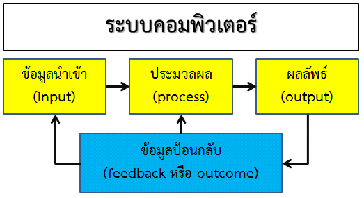

ระบบ (System) หมายถึง ขั้นตอนการปฏิบัติงานที่มีการกำหนดอย่างชัดเจนว่าต้องทำอะไรบ้าง เพื่อให้ได้ผลออกมาตามที่ต้องการ ขั้นตอนการปฏิบัติงานจะต้องปรากฎให้ทราบโดยทั่วกันไม่ว่าจะอยู่ในรูปของเอกสารหรือสื่ออิเล็กทรอนิกส์ หรือโดยวิธีการอื่น ๆ องค์ประกอบของระบบ ประกอบด้วย ปัจจัยนำเข้า กระบวนการ ผลผลิต และข้อมูลป้อนกลับ ซึ่งมีความสัมพันธ์เชื่อมโยงกัน
ระบบคอมพิวเตอร์ (Computer System) หมายถึง ขั้นตอนการปฏิบัติงานของคอมพิวเตอร์ที่มีการกำหนดอย่างชัดเจนว่าต้องทำอะไรบ้าง เพื่อให้ได้ผลออกมาตามที่ต้องการ ขั้นตอนการปฏิบัติงานจะประกอบด้วย ข้อมูลนำเข้า การประมวลผล ผลลัพธ์ และข้อมูลป้อนกลับ ซึ่งมีความสัมพันธ์เชื่อมโยงกัน
